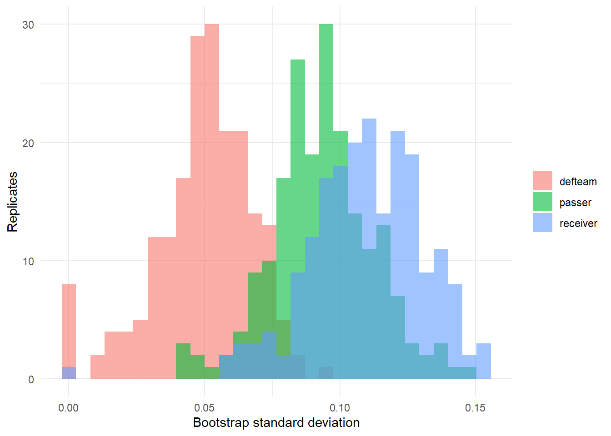

4.3 Covariates, Varying Slopes, and Crossed Effects
Author
Hua Gong
1 Learning objectives
After this tutorial, you should be able to:
add level-one covariates to a multilevel model and interpret the random effects that remain;
add a level-two covariate and explain what it changes about the passer effects;
specify varying slopes and interpret the random-effect covariance;
distinguish nested from crossed grouping structures and write each in lme4 syntax;
fit a crossed model that attributes each pass to its passer, receiver, and defense; and
quantify uncertainty in variance components with a parametric bootstrap.
2 Level-one covariates
Tutorial 4.1 built an expectation model and then averaged residuals by passer. A multilevel model does both steps at once. With level-one covariates describing attempt by passer ,
The fixed coefficients describe throw difficulty. The random intercept is the passer’s completion ability after accounting for the throws they attempted. Both are estimated jointly, so the passer effects and the difficulty model inform each other.
The coefficient on standardized air yards is the change in log-odds of completion for a one-standard-deviation deeper throw, holding the passer and the other covariates fixed. Being hit while throwing is costly.
The passer standard deviation increases once throw difficulty is in the model. That is a feature of the logistic scale: the level-one residual variance is fixed at , so explaining part of the outcome with covariates rescales the whole latent scale and inflates the remaining components. The passer effects are also cleaner, because differences in what passers were asked to throw no longer masquerade as differences in passers.
3 A level-two covariate
A level-two covariate describes the passer rather than the attempt. In the level-two equation,
where is a passer-level variable and is now the deviation from what predicts. Examples in practice are age, experience, and draft position. Here we use a contextual variable available in the data: the passer’s average air yards, which measures how aggressively they throw.
The level-one coefficient says a deeper throw is harder for a given passer. The level-two coefficient asks whether passers who throw deeper on average complete more or fewer passes at a given depth. A coefficient near zero says aggressiveness itself carries no penalty once the depth of each throw is in the model.
4 Varying slopes
So far every passer shares the same air-yards coefficient. Perhaps some passers lose accuracy faster with depth than others. A varying-slope model lets each passer have both an intercept and a slope:
with
The correlation asks whether passers who are better on average (large ) are also better or worse on deep throws (large or small ).
The slope standard deviation is small relative to the fixed slope of about . The correlation between intercepts and slopes is strongly positive: passers with higher intercepts also have less negative slopes, so the passers who complete more short throws hold up better on deep ones. A likelihood-ratio comparison with the varying-intercept model shows how much evidence the data provide for passer-specific depth effects.
Fitted completion probability against air yards for six high-volume passers, from the varying-slope model with other covariates at their reference values.
The coef() function returns and for each passer, that is, the passer-specific intercepts and slopes after shrinkage.
WarningSingular fits
When a slope variance is estimated at or near zero, lme4 reports a singular fit. The model has not failed; the data simply contain no evidence that the slopes vary. Simplify the random-effect structure or, as in Tutorial 4.5, use a Bayesian model whose prior keeps the variance away from exactly zero.
5 Nested and crossed structures
Grouping factors can relate to each other in two ways.
Nested. Each level of the inner factor belongs to exactly one level of the outer factor. Attempts within games within a passer are nested: a game-by-passer combination belongs to one passer. In lme4, (1 | passer / game_id) expands to (1 | passer) + (1 | passer:game_id).
Crossed. Levels of one factor combine with many levels of another. Each pass has a passer, a receiver, and a defense, and the same receiver catches passes from several passers while the same defense faces every passer it plays. Crossed effects are written as separate terms, (1 | passer) + (1 | receiver) + (1 | defteam).
The crossed model is
where , , and index the passer, receiver, and defense on attempt , and
Every pass now contributes to three effects at once. This is the multilevel answer to the residual-allocation problem: the residual is shared among the parties according to how consistently each one is associated with success.
The receiver standard deviation is at least as large as the passer standard deviation. On completion, who is catching the ball matters at least as much as who is throwing it, a fact a passer-only model cannot express.
Passer effects from the passer-only model against the crossed model. Points off the diagonal are passers whose receivers or opponents changed the assessment.
A passer above the line gained after the model recognized that their receivers were below average; a passer below the line lost some credit to strong receivers.
For EPA the defense component is smaller and the residual dominates. The variance components differ by outcome because completion and EPA measure different things.
6 Uncertainty in variance components
Standard errors for fixed effects come from the curvature of the log-likelihood and are reported by summary(). Variance components are different: their sampling distributions are skewed and bounded at zero, so a symmetric standard error is a poor summary. The standard remedy is a parametric bootstrap:
simulate a new response vector from the fitted model, drawing new random effects and new residuals;
refit the model to the simulated data;
record the statistics of interest; and
repeat and read off percentiles.
The results below were precomputed with bootMer() for the EPA model, using 200 replicates.
bootstrap[, variance_names] %>%as.data.frame() %>% tidyr::pivot_longer(everything(), names_to ="component", values_to ="sd") %>%ggplot(aes(sd, fill = component)) +geom_histogram(bins =30, alpha =0.6, position ="identity") +labs(x ="Bootstrap standard deviation", y ="Replicates", fill =NULL) +theme_minimal()

Bootstrap distributions of the three standard deviations in the EPA model.
The defense interval reaches close to zero: one season of EPA cannot establish stable differences between defenses on this outcome. The passer and receiver components are clearly positive.
NoteTwo kinds of uncertainty about a player effect
The bootstrap above resimulates new random effects in every replicate (use.u = FALSE), so it describes the sampling distribution of the variance components, not of any particular passer’s effect. Uncertainty about one passer’s effect, given the variance components, is the conditional standard deviation from Tutorial 4.2. Tutorial 4.5 obtains both at once from a posterior distribution.
7 Practice
Write the crossed model for EPA with passer, receiver, and defense effects in level-one and level-two form.
Why does adding level-one covariates change the passer variance?
When is (1 | passer / game_id) appropriate, and what does it add relative to (1 | passer)?
If the receiver standard deviation exceeds the passer standard deviation, does that mean receivers are more important than passers for winning?
8 Key takeaways
Level-one covariates turn the random intercept into an “over expectation” effect estimated jointly with the expectation model.
Varying slopes let a covariate’s effect differ by player, with a covariance that links intercepts and slopes.
Crossed random effects share each play’s residual among passer, receiver, and defense.
A parametric bootstrap provides honest intervals for variance components.